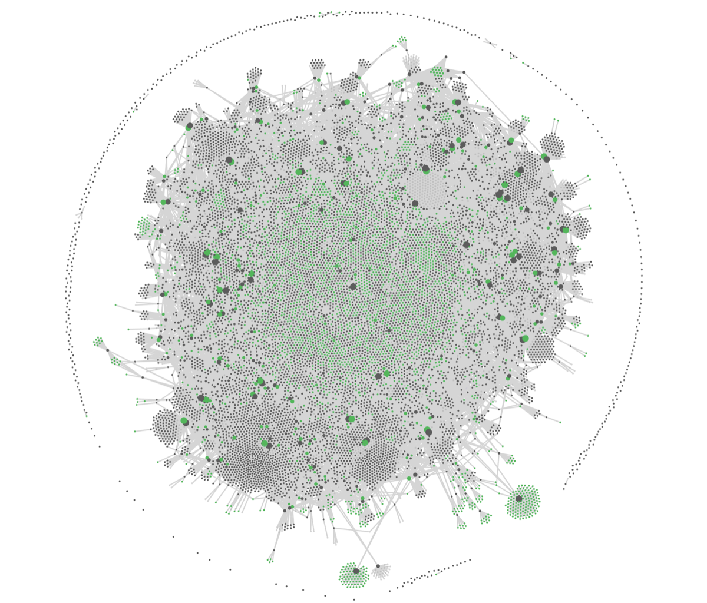

My Personal Hacker News
For 4,775 days I saved every link I liked. I rarely go back.
This week they told me what I care about.
The place to get the news
I visit a site called Hacker News where programmers post links all day. It is the place to get the news. Every morning it hands me the things that are interesting to two hundred thousand other people, and I go fishing for the three that are interesting to me.
I wanted the fishing done for me.
The idea was easy: take the front page, take everything new that got some traction, throw away the ninety-odd percent that has nothing to do with my life, and write down what is left.
The only problem left was that the AI needed to know what I like.
Ninety-nine days of me
My notes live in a vault — one folder of plain text files that an AI works in alongside me. Today's daily note says Day 99.
So I asked it to profile me. It read 145 research tasks I had commissioned over those 99 days and turned them into a profile: what I keep coming back to, ranked, plus the rules that decide whether something is worth my attention at all.
It knows now.
But it only goes back 99 days.
Wait, there is more…
I hid the best from my AI
Here is the thing I had not told it about.
For thirteen years I have kept every link I liked. It started on the link-sharing site Digg, moved to the blogging platform Tumblr, then to a WordPress blog I have posted to since 2013 — one post per link, each one tagged with what it was about. 7,842 links. 2,227 different tags. As files on disk: nine thousand documents. My interests, timestamped, in my own handwriting.
For about five days, all of it lived in the same vault as my notes.
I imported it on Day 2. By Day 5 it was gone again — moved out into a vault of its own, and the journal entry for that week records the reason in the politest possible terms: isolated to keep 10K+ posts out of V1's index.
I read my notes on three devices. Phone, iPad, Mac. Ten thousand small files didn't work well with iCloud.
Here is what it looks like — grey are links, green are tags.

The amoeba is my interest graph since 2013.
Don't read nine thousand documents
I stopped the AI before it could make the obvious mistake and read all of it. Nine thousand documents is not research, it's a liability.
We didn't need the documents. Every document recorded what I liked in one small section — its tags.
In 2 seconds it extracted everything. 6,679 tagged links, 2,127 distinct tags.
The AI discovered my love for diving, previously hidden from the vault. Seventy-seven links, plus thirty-eight on underwater photography and twenty-eight about sharks.
I told my AI to get to work.
Ready when I start my day
The first run created a script, fired up the API, fetched articles, looked at 111 stories and only kept ten. For me to look at.
I read all ten. It was an 8 out of 10.
Not the score — I loved 8 out of 10. They matched my interests perfectly.
I want this daily, I thought.
So now it runs every morning at seven, before I'm at the desk. It takes the front page and everything new that cleared twenty points, drops whatever it has shown me before, and scores the rest against the profile — thirteen years of me included. Anything that survives gets fetched and properly read, never judged by its headline. Ten items, maximum. Some mornings it should be none, and it is allowed to say so.
Sorting through the tags made me realize I had been slacking — my own blog posts were bare, so I decided to fix them too.
Steal this
Five moving parts, none of them expensive.
The list. Hacker News has a free search API — a machine-readable version of the site — at hn.algolia.com/api/v1. No key, no scraping, no permission needed. One call returns the front page. A second returns everything posted in the last day above a points floor, points being upvotes; I use twenty, which cuts a day's roughly thousand new stories down to about a hundred.
The memory. A file listing the stories it has already shown me. Nothing appears twice, and a day the daily run missed gets picked up by the next one instead of falling through the floor.
The filter. A plain text file describing what I care about, ranked, with a handful of veto rules that can reject a story immediately, however good its headline is. This is the only part that is about me, and the only part that took real work.
The reading. Anything that survives the filter gets fetched in full and read — I use Jina Reader, r.jina.ai/<url>, which hands back any web page as plain text. The write-up comes from the article, not just the title.
The comment section. I missed this on the first run. A high comment-to-upvote ratio means the story is controversial, and the comment section tells you why. So when a story has at least as many comments as upvotes, the discussion gets read too — same free API, hn.algolia.com/api/v1/items/<id> hands back the whole comment tree. And when the thread contradicts the article, the thread wins.
Then three rules: at most ten items, zero is a valid answer, and it runs on whatever scheduler you already own.